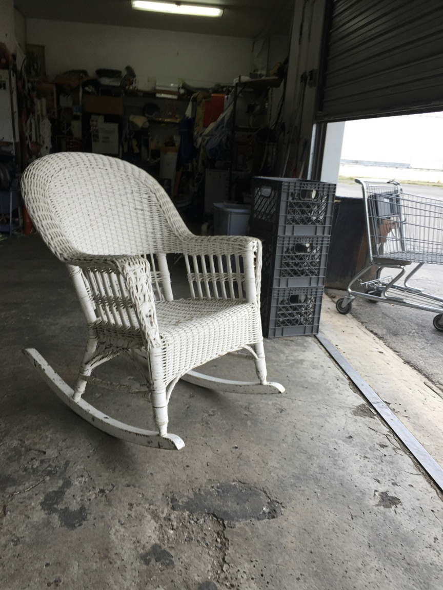

White Wicker Porch Rocker
Item # WD-1009 | In stock
Price: $95.00

Description
Classic white wicker rocking chair, ready for a porch and a glass of sweet tea. The frame is solid and the rockers glide evenly. There is some chipped paint on the runners, which you can touch up or leave as-is for that cottage look.
Interested? Call or text (904) 555-0147 or email dottie@dottiesoddities.example and mention item # WD-1009.